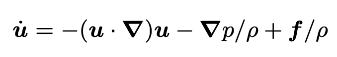
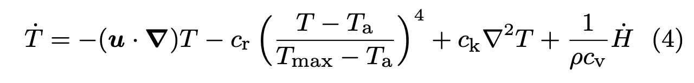

3D Explosion Simulation Project Proposal
Team members: Eric Barrett, Angela Liu, Adam Rashid, Jenny Wang
In this project, we will create 3D simulations of explosions. Explosions will start from a central point and create a pressure wave, heat wave, and a vapor cloud that radiate outwards, colored by light emitted by the heated material. Our simulation will be tested in multiple environments.
Problem Description
For this project we are trying to accurately animate explosion from the initial combustion to the motion of the lingering vapor cloud. This simulation can be used for game animation, movie and TV CGI, and even training simulations. The challenges will be in the vapor cloud simulation especially with how this will interact with different objects for example, an explosion around a corner or out a window. The general idea for this explosion will be to treat the vapor cloud as an incompressible fluid model to account for the motion of air and hot gases.
Goals and Deliverables
Goals:
- (1a) Create a realistic simulation of particle movement that follows the force equations of the explosion.
- Create the gas model by representing particles as a gas fluid that satisfies the following equation:

where u_dot is the change in fluid velocity over time, u is the fluid velocity, p is the gas/particle pressure,
rho is the gas/particle density, and f is any external force (ex. gravity, explosion force).
- The heat
- (1b) Add coloring to explosion particles that reflects the heat of the explosion
- Due to the heat of the explosion, gas particles will initially radiate a bright orange/yellow color
that reflects the heat intensity at that position in a particular moment in time. This radiance should
decrease in intensity and color as the heat subsides and dissipates into the air.
- The heat evolution over time will follow the fluid temperature equation and will be directly
used to compute the radiant intensity caused by particle heat generation.

(2) Add simulation of smoke/vapor following the explosion.
- This will mostly consist of modeling the aerodynamics of moving smoke/dust particles circling in the air.
- (3) Modify the environment to create explosions that interact in different spaces / with different objects (ex. Air, box, corner, etc.)
- One idea is to consider how the explosion would react in different mediums: in space, underwater, in a vacuum
- Having the explosion interact with neighboring walls/objects that serve to contain the explosive distribution of
particles (ex. explosion in a box with a small hole, movement of explosive particles after hitting a wall/corner, etc.)
The first two goals (marked (1ab)) represent the basic necessary components of the project as a minimum viable product.
By modeling the movement and light of the explosive particles, we will be able to render a simulation of the initial explosive moment
of gas and dust particles.
After implementing these two parts, we hope to realistically extend the explosion by implementing the smoke/vapor cloud that
lingers following the initial explosive forces. Finally, if time allows, we would be interested in modeling the behavior of
both the explosion and the lingering cloud in different environments or mediums to see how they would react under different
forces/pressures or with different objects like walls, windows, or corners.
Demo: Our demo will consist of a short video showing the movement of particles and light in the course of an explosion (approx. 2-3 seconds real time with 60 fps).
We will then replay the scenario at a slower simulation speed to walk through the physical, fluid, and thermodynamic intricacies
involved in different steps of the rendering algorithm.
Performance/Analysis: We will quantify our project performance by the realism of the rendered simulation.
Using reference simulations seen in the linked sources below, we hope to expand upon them and create more
realistic renderings of the force and color of the explosions, along with 3D shading of the explosion particles
and resulting vapor cloud.
Schedule
| Week 1 |
- Flush out project goals
- Create a working environment with some particles in a ball (beginning of explosion).
|
| Week 2 (Milestone) |
- Create simulation of particles acting on outward/upward explosion force.
- Add heat representation by incorporating direct light mixed with the gas particles. The light should dissipate over time by following the thermodynamic equations
|
| Week 3 |
- Simulate vapor cloud physics over time
- Implement the refraction cause by the explosion shockwave
|
| Week 4 |
- If all went well work on interactions with other objects / finalize project and presentation
|
Resources
Code based on clothsim. Simulation running on personal computers
Paper #1: Animating Suspended Particle Explosions
Paper #2: Animating Explosions
Implementation details: Particle Explosion